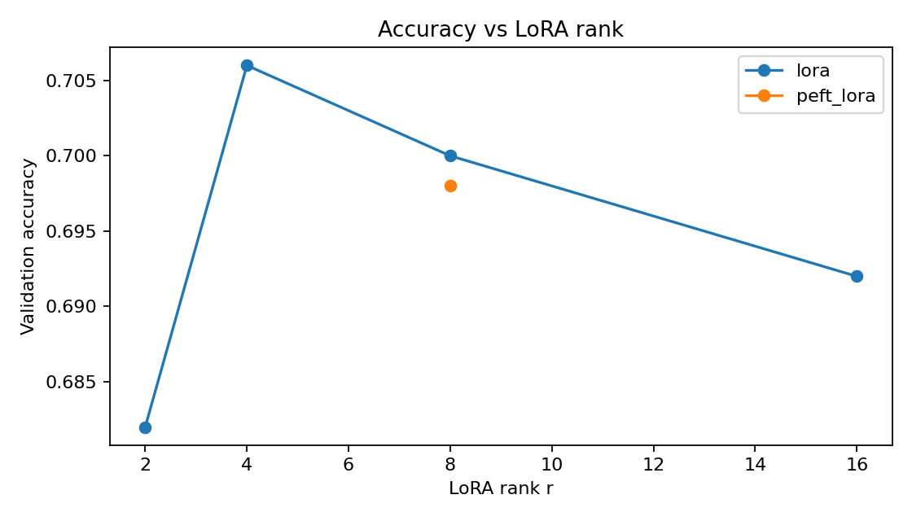
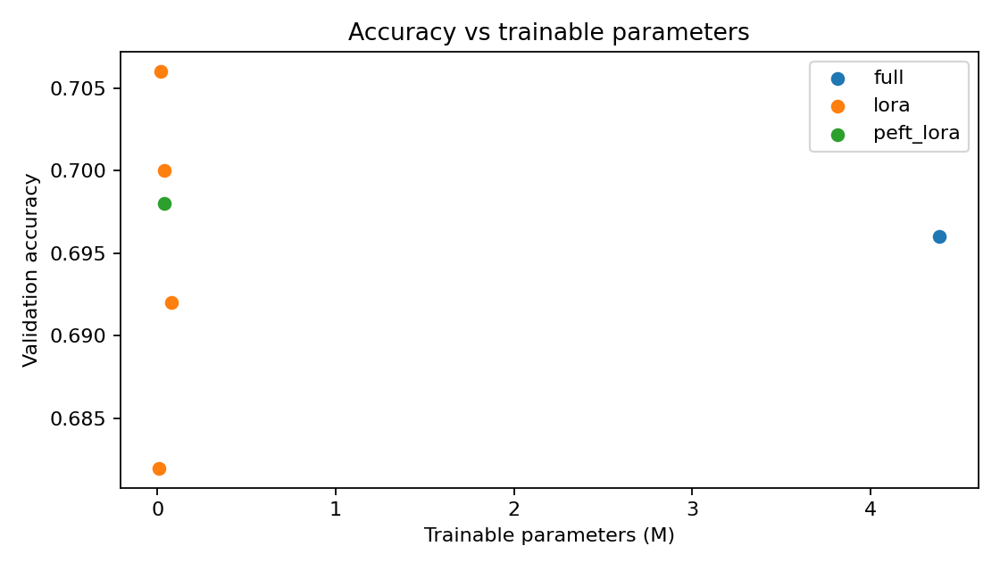

Best accuracy
0.706
Custom LoRA rank 4.
Results
The experiment compares full fine-tuning, four custom LoRA ranks, and one PEFT LoRA run. The best custom adapter reached 0.706 accuracy while training 19,714 parameters.
Best accuracy
0.706
Custom LoRA rank 4.
Full accuracy
0.696
Full fine-tuning baseline.
LoRA r4 params
19,714
Trainable adapter plus classifier params.
PEFT checkpoint
1.06 MB
Adapter-only checkpoint size.
Rank sweep
The custom LoRA sweep shows the useful tradeoff: small ranks trained very few parameters, and rank 4 produced the best validation result in this run.
Full
r=2
r=4
r=8
r=16
Source metrics
outputs/metrics.csv.| Mode | Rank | Accuracy | F1 | Trainable Params | Total Params | Train Time | Checkpoint |
|---|---|---|---|---|---|---|---|
| Full | - | 0.696 | 0.7216 | 4,386,178 | 4,386,178 | 6.33s | 17.64 MB |
| Custom LoRA | 2 | 0.682 | 0.7028 | 9,986 | 4,395,906 | 3.88s | 17.68 MB |
| Custom LoRA | 4 | 0.706 | 0.7351 | 19,714 | 4,405,634 | 3.84s | 17.71 MB |
| Custom LoRA | 8 | 0.700 | 0.7024 | 39,170 | 4,425,090 | 3.89s | 17.79 MB |
| Custom LoRA | 16 | 0.692 | 0.7061 | 78,082 | 4,464,002 | 3.91s | 17.94 MB |
| PEFT LoRA | 8 | 0.698 | 0.7010 | 39,170 | 4,425,348 | 5.40s | 1.06 MB |
Generated plots


The run supports the practical LoRA intuition: for a narrow task, a low-rank update can be enough to move model behavior. Rank 4 was the sweet spot here, while larger ranks did not produce better accuracy in this short CPU experiment.
Custom LoRA checkpoints are large because this repo saves full Hugging Face checkpoints for simplicity. The PEFT run demonstrates the real adapter-only storage advantage with a 1.06 MB checkpoint.